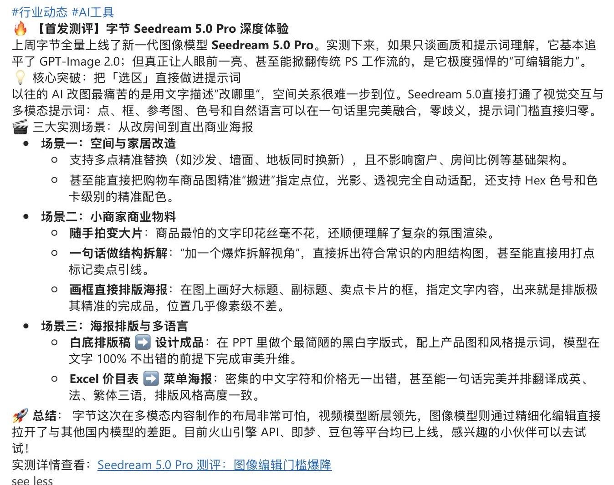

理解需求，也验证体验
做过用户访谈、问卷与 UAT，能从反馈中发现问题，再协同推进产品改进。
10 次电话访谈 · 90+ 份问卷
50+ Bad Case 与体验缺陷梳理
50+ Bad Case 与体验缺陷梳理
2027 届硕士 · AI 产品运营方向
你好，我是李汶倩 Wincy
从用户反馈、产品测试，到知识库、内容与培训，
我喜欢把复杂的 AI 能力，转化成清楚、好用的体验。
也用 AI 创作故事，让想法成为看得见的作品。
南京农业大学 · 土地资源管理硕士在读
 很高兴认识你 ✳
很高兴认识你 ✳01 / WHAT I BRING
以用户为起点，
把理解、验证和表达连接起来。
做过用户访谈、问卷与 UAT，能从反馈中发现问题，再协同推进产品改进。
关注模型与工具变化，结合办公场景做评测、写指南，帮助非技术用户迈出第一步。
参与企业 AI 知识库与课程中心建设，将 FAQ、教程与学习资源整理成可查、可学的内容。
有三平台内容运营经验，也能独立完成从脚本、分镜到生成、配音与剪辑的 AI 短片。
02 / SELECTED WORK

让模型动态、工具能力，变成用户读得懂、用得上的内容。

整理 FAQ、操作教程和课程资源，让一次解答成为可持续使用的知识。

用专题分享、工作坊和内容沉淀，连接工具认知与实际使用。
 03:12
03:12以篮球场为叙事空间，讲述被忽视的伤害，以及一次支持的意义。
 00:48
00:48从一桌饭、一次等候切入，用生活细节呈现父女之间含蓄的情感。
LET’S CONNECT
正在寻找 AI 产品运营 / AI 产品相关机会。